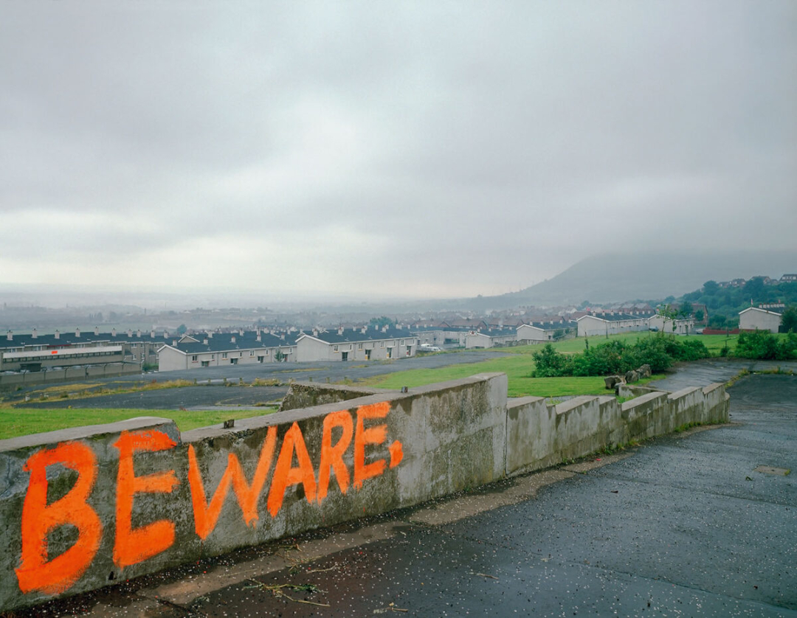

About
I’m a PhD student, teacher, and ‘artist’ investigating how communities resist cultural and technological colonization. The basics of my work resides in the questions: Who gets to make meaning and why? How do we democratize this process?
This question animates my research in critical intercultural solidarities with Kashmir and Northern Ireland as my focus, my creative practice in generative literature and critical making, and my teaching in first-year composition.
Research Work
Rather than theoretical buzzwords, my work might be best illuminated by these questions I ask as I develop my scholarly practice:
-
How may we implement visual and digital culture to expand how we understand narrativity?
-
Are there alternative tools we can develop to decentralize that expanded narrativity?
-
What does it mean, if anything, to create art and scholarship using accessible, non-commercial tools?
Teaching Work
In my teaching work, I generally find myself concerned with the following questions:
-
How do digital platforms transform what it means to “write”?
-
What new literacies emerge in online, interactive, or algorithmic spaces?
-
How can we teach writing that prepares students for a post-print world?
Please see my teaching statement for more info.